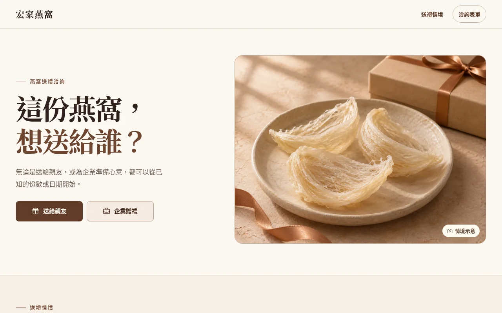

Website Development
網站與數位產品開發
建立品牌入口，讓資訊與服務清楚呈現。
服務範圍與適用情境
可討論範圍
- 官方網站與企業網站開發
- Responsive Web Design
- 前端介面與互動設計
- Next.js 與 React 網站開發
- TypeScript 應用
- SEO 基礎建置
- 網站效能與可及性改善
DRAFT / NOT APPROVEDLuxury v1 本機品牌審閱原型；未核准、未公開，不是已完成的設計系列。
LUXURY / A PRESENTATION STUDY
從企業網站、Java 系統開發到 AI 應用整合，協助企業建立穩定、可擴充且符合實際營運需求的數位服務。
此入口前往既有 Modern 官網；本原型只供視覺審閱，不收集或傳送詢問內容。
SERVICES / FROM NEED TO SCOPE
五類服務可獨立規劃，也能依企業需求組合。從使用者看見的介面，到系統、資料與部署流程，選擇適合當前階段的技術範圍。
Website Development
建立品牌入口，讓資訊與服務清楚呈現。
Java Enterprise Development
以可維護的商業邏輯，支援企業日常營運。
System Integration & Database
連結系統與資料，讓跨系統流程更清楚。
AI & Automation
將 AI 連結實際需求，探索流程改善的可能。
Cloud & Infrastructure
從開發延伸至部署，規劃適合專案的運行環境。
SELECTED WEBSITE PRESENTATIONS
探索品牌網站展示、網站範例與技術規劃，了解不同情境的網站呈現方式。以下保留原有精選順序與展示性質，不代表客戶委託或交付成果。



WORKING TOGETHER
先理解需求，再確認方案與交付範圍，從開發、測試到後續改善持續溝通。工期、報價與合作條件依個別專案確認。
了解商業目標、使用情境與目前需要解決的問題。
討論技術選擇、實作範圍與合作方式。
依確認的方向進行開發，持續溝通實作進度。
驗證約定範圍內的功能，整理交付與使用資訊。
依實際需求，討論後續維護、優化與擴充。
NEXT CONVERSATION
無論是企業網站、Java 系統、系統整合、AI 應用或部署規劃，都可以從理解問題與目標開始。
先查看現有 Modern 方案試算連結會前往現有官網。參考試算不是正式報價；Luxury 名稱只描述呈現方向，不代表不同價格級距或服務承諾。
REVIEW APPENDIX / NOT A WORKING FORM
這份原型只示範首頁構圖與可辨識的深色角色，沒有建立 Luxury 路由、Contact 或 Estimator。以下控制項是明示的視覺樣本，不會提交、記錄或傳送資料。
以下不是詢問表單。文字不可編輯；選項只展示瀏覽器當頁的原生選取狀態。
可聚焦與選取文字，不是需求輸入欄位。
錯誤樣本：此處僅示意邊界與說明，沒有執行驗證。
此按鈕刻意停用，沒有可執行的動作，也沒有送出功能。
正向狀態文字樣本：只示意可讀性，不代表已寄出或已收件。
xk-website main@8ba299a5a48da41ca7f4d88d9b2149d7c83f6584；不依賴或整合尚未合併的 Heritage 程式。xplore-kaleidoscope main@9213a3d8dacb8774d87c26cb736c4a4315779e95（tree 195c5c8100b74513985e040f3ee6fc642571285e）。本稿的 Luxury 色彩、字階與展示外框例外仍待本版本審閱，不以來源查核代替品牌核准。src/config/homepage.ts → homepageHero。五類服務的名稱、摘要、範圍及情境：src/config/services.ts → serviceCategories / servicesPage.overview。src/config/services.ts → serviceProcessSteps / servicesPage.process / servicesPage.cta。src/config/website-showcases.ts → showcaseSettings.featuredIds / websiteShowcases。均保留自製品牌展示／可瀏覽狀態，非客戶成果。src/config/site.ts。原圖：public/images/showcases/{march-tangbao,hongjia-birdnest,honest-diecut}.webp。public/brand/source/xk-logo-horizontal.svg / xk-logo-white.svg。所有圖片使用相對路徑，未複製、重製、裁切或下載新素材。docs/01_design/design-collection/design-systems.md → Luxury。其餘構圖標題、審閱提示與圖說為本原型的編排性文案，不建立新的品牌事實。